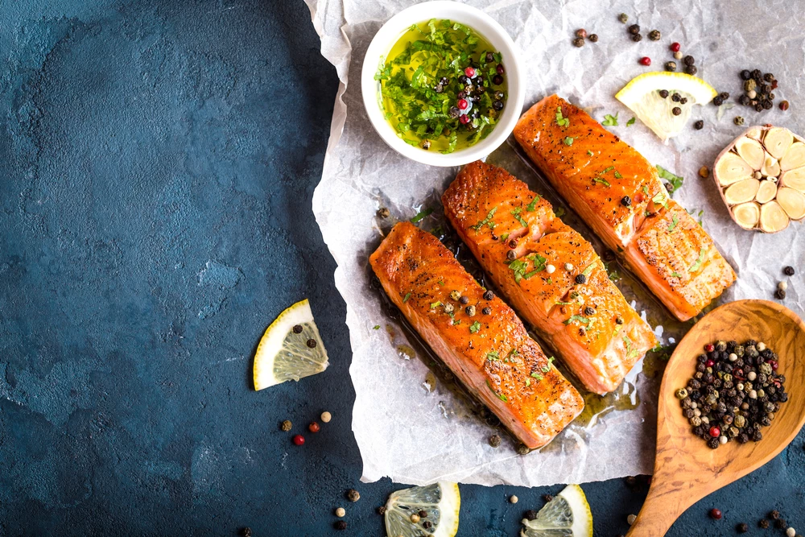

סלמון בתנור במרינדת לימון, שום ודבש
רוצים לגוון את הארוחות הביתיות במתכון קליל ורב רושם? סלמון בתנור ברוטב דבש, שום, לימון ושמן זית – מתכון וסרוויס ב-10 דקות!

⏱ זמן הכנה: 10 דקות (כולל אפייה: 25 דק׳)
🔥 רמת קושי: בסיסי
🍽️ קלוריות: 442
✅ כשר
מרכיבים (4 מנות)
- 800 גרם סלמון טרי (4 חתיכות)
- 3 כפות דבש
- 4 כפות שמן זית
- 1/4 כוס מיץ לימון
- 3 שיני שום כתושות
- 1 חופן פטרוזיליה קצוצה
- 1/2 כפית מלח
- 1/2 כפית פלפל (שחור או ארבע עונות)
- 1 לימון פרוס לפרוסות דקות
אופן ההכנה
- מחממים תנור ל-180 מעלות.
- בקערה מערבבים שמן זית, דבש, מיץ לימון, שום, מלח ופלפל.
- מסדרים את הסלמון בתבנית, יוצקים מעליו את המרינדה.
- מניחים פרוסות לימון מעל כל פילה.
- אופים כ-20–25 דקות עד שהסלמון מבושל ורך.
- מפזרים פטרוזיליה קצוצה ומגישים חם.